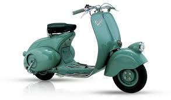
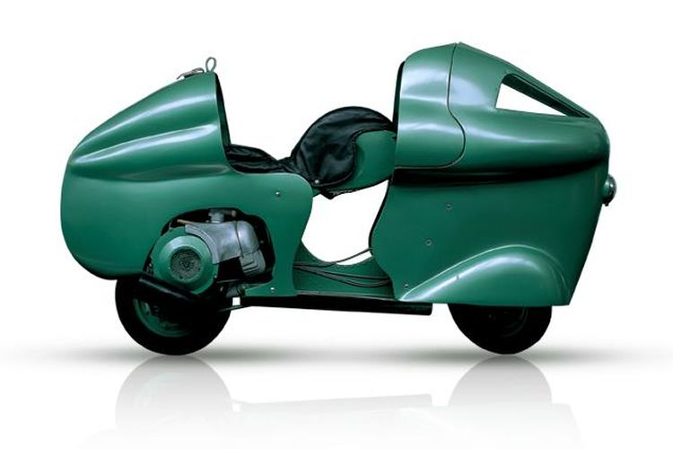

Dikutip dari situs Piaggio, kejayaan Vespa dimulai saat Rinaldo Piaggio (20) mengambil alih bisnis ayahnya menjadi perusahaan pembuat alat transportasi di Sestri Ponente, Genova, Italia pada 1884.
Pada awal abad ke-20, Piaggio sibuk memasok furnitur untuk kapal mewah Italia dan asing, tetapi Rinaldo merasa bahwa sektor ini menawarkan kesempatan terbatas untuk pertumbuhan. Akhirnya, ia memutuskan untuk memperluas ke sektor kereta api, membangun dan memperbaiki gerbong. Hal ini membuatnya membentuk tim insinyur dan teknisi perbaikan yang luar biasa. Peristiwa Perang Dunia I membuat Piaggio melirik sektor penerbangan.
Akhirnya, ia memutuskan untuk memperluas ke sektor kereta api, membangun dan memperbaiki gerbong. Hal ini membuatnya membentuk tim insinyur dan teknisi perbaikan yang luar biasa.

Pada awal tahun 1915, Piaggio mulai memperbaiki dan membangun pesawat amfibi, kemudian mengakuisisi perusahaan penerbangan yang berbasis di Pisa, Italia pada tahun 1917. Piaggio lalu bertemu dengan seorang desainer dan insinyur aeronautika Giovanni Pegna. Dari kerjasama itu muncul pesawat tempur monoplane P2 (Piaggio 2) dan evolusi P7 berikutnya, pesawat amfibi balap Piaggio dan P108 bermesin empat yang akan menjadi pesawat besar buatan Italia terakhir sebelum Perang Dunia II.
Pada tahun 1944 dan mendekati akhir Perang Dunia II perusahaan Piaggio diteruskan oleh anak Rinaldo yakni Enrico Piaggio. Dari sisa-sisa onderdil pesawat tempur pabrik buatan ayahnya, lalu ia menemukan ide membuat kendaraan skuter.

Upaya pertama adalah skuter yang dirancang oleh Renzo Spolti dengan kerangka penahan beban. MP (Moto Piaggio), dalam iterasi MP1 dan MP5-nya, dijuluki Paperino. Tidak yakin, Enrico meminta Corradino d'Ascanio untuk melihat kembali desainnya. Setahun kemudian melihat dimulainya produksi kendaraan roda dua yang akan membuat sejarah: Vespa 98.
Dikutip dari italyonthisday.com, Enrico membangun kembali pabrik Pisa dan Pontedera, untuk mengambil keputusan berani untuk beralih dari memproduksi pesawat ke sepeda motor. Awalnya dia terkesan dengan kelincahan sepeda motor militer kecil buatan Amerika yang dijatuhkan dengan parasut untuk digunakan oleh pasukan Sekutu di darat saat mereka berperang melawan Jerman di Milan dan Turin dan meminta perancangnya untuk membuat sesuatu yang serupa untuk penggunaan sipil. Corradino D'Ascanio, seorang insinyur penerbangan akhirnya merancang Vespa. D'Ascanio sebenarnya bukan penggemar sepeda motor. Menurutnya motor kendaraan yang kotor dan sulit untuk dikendarai dan dirawat, jadi dia mulai menghilangkan semua elemen yang tidak disukainya.
Prototipenya menampilkan roda kecil, kursi besar yang empuk, mesin yang benar-benar tertutup, dan pelindung tinggi di bagian depan, melindungi pakaian pengendara dari debu dan lumpur. Ia memindahkan mesin dari posisi sentral tradisionalnya, yang mengharuskan pengendara mengangkangi mesin saat pemasangan, ke posisi di samping roda belakang. Hal ini menciptakan celah antara setang dan kursi yang memfasilitasi pemasangan yang mudah dan bertahap bahkan untuk wanita yang mengenakan rok.
1.vespa 98 (1946)
2.vespa 125(1949)

3.vespa monthelry(1950)
4.vespa 150 side-car(1955)
 sebelumnya
sebelumnya